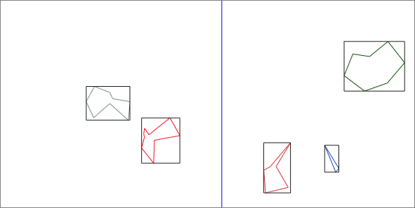
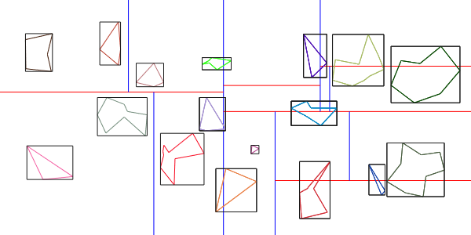

Number of polygons:
Show bounding boxes:
Use kd-tree:
Last week, you have implemented ray tracing in 2D with direct and indirect lighting. As you could see, the number of rays needed quickly grows large, even for small scenes. The more objects are involved in a scene, the more intersection tests have to be performed in order to find the nearest intersection for each ray. Secondary rays like shadow or reflection rays further contribute to the required number of intersection tests. In the lecture, you have learned about several methods to make intersection tests more efficient, for example bounding volumes and a variety of hierarchies building up on them.
In the canvas above you can see several polygons with different numbers of vertices. Your task is to compute a bounding volume for each of them and build up a kd-tree structure.
You can change the number of polygons using the appropriate slider and toggle bounding box drawing using the first checkbox. The second checkbox switches between plain polygon traversal and traversal of the kd-tree structure. Once you have completed the whole task, both methods should draw the same polygons.
In this subtask, you should set up 2D bounding boxes (rectangles) around the polygons.
Each box should be aligned to the x and y axes and enclose the polygon in the closest possible way.
See the example on the left for reference.
Follow the instructions in the constructor of Object and compute the axis-aligned bounding boxes!
Once you have done that, the bounding boxes are visualized with dark grey lines.
In the next step, the polygons should be stored in a kd-tree structure, which you know from the lecture. The tree should store a maximum of 3 polygons in each of its leaf nodes. The construction is done as follows: First, all the polygon objects are assigned to a single root node. The root node is then split along the x axis, creating two children. The children are split along the y axis, each creating two child nodes. The splitting process should stop when a node only contains three polygon objects or less. The objects are stored in the leaf nodes, while inner nodes only store their children and information about the split (axis and position).
The picture above shows the split of a node: The split should divide the objects in a way that for even numbers, both children get the same number of polygons. For odd numbers, the right/lower child should have one more (that is, the child with the higher x/y values). The chosen split position should have equal distance to the two polygons next to it, as you can see in the picture.
First, carefully read the definition of Node and the associated comments.
Then follow the step-by-step instructions in the constructor of KDTree to build the kd-tree structure!
The splitting lines are visualized in red (horizontal) and blue (vertical). You can play around with the slider to see how the kd-tree structure behaves for different numbers of objects. Once you are done, the kd-tree structure should look like this using the maximum amount of polygons:
In this exercise we learn how to create an image by raytracing a three-dimensional scene. The image will contain diffuse illumination, shadows, reflections, and refractions. If a light ray hits a glass-like object, one part of it is reflected and the other part is transmitted into the object. The transmitted ray is also bent (refracted) at the surface. The direction of the refracted ray depends on the refractive indices of the object and the surrounding medium (in our case air).
The raytracing can be visualized in a tree with weighted rays as nodes. The weight of each node is the contribution of that sub-tree to the final color. More properties of the trace tree:
Side Note: The trace tree in the lecture had rays as edges and intersections as nodes. Our tree is simpler, because we say that a node has intersected an object if it has children. A leaf node didn't intersect the scene (hit the sky) or was terminated by some other condition.
Unfortunately, the trace tree seen above cannot be traversed in a simple loop.
In this task, you are asked to implement a depth first search (DFS) in the fragment shader of rt.glsl.
The DFS will be implemented without recursion.
We will use a local array of TraceNodes as a custom stack that is processed until it is empty.
First, go to the function trace in rt.glsl. The local array that will be used as a stack is already there. The counter stackSize gives the number of elements on the stack.
Each TraceNode stores a ray, a weight, and the current depth of the tree.
push(node).TraceNode n = pop();) the topmost element from the stack and store it in the local variable node.DFS termination criteria (add these in the loop after you have retrieved the topmost element from the stack):
INTENSITY_EPSILON.
maxDepth.
The fresnel equations describe how much light is reflected at the interface between objects of different refractive indices. The fresnel reflectance function $R(\theta,n_1,n_2)$ depends on the angle of incidence and the refractive indices. If the light hits the surface close to orthogonal, only a small percentage is reflected. For large angles $\theta$ most of the light is reflected ($R$ will be close to one). The remaining light (which is not reflected) is transmitted into the object. \[ R(\theta_i,n_1,n_2) = \frac{1}{2} (R_s^2 + R_p^2) \] \[ q = 1- \left( \frac{n_1}{n_2} \sin \theta_i \right)^2 \] \[ R_s = \frac{n_1 \cos(\theta_i) - n_2 \sqrt{q} }{n_1 \cos(\theta_i) + n_2 \sqrt{q}} \] \[ R_p = \frac{n_1 \sqrt{q} - n_2 \cos(\theta_i)}{n_1 \sqrt{q} + n_2 \cos(\theta_i)} \] If $q < 0$, total internal reflection occurs. In that case, all light is reflected: $R(\theta_i,n_1,n_2) = 1$.
Compute the fresnel reflectance in float fresnel(float n1, float n2, float cosThetaI).
If a ray is transmitted into an object, an inner collision is created when the ray exits the object on the other side.
Compute $\cos \theta_i$ with the surface normal and ray direction. The collision is inner if $\cos \theta_i < 0$. Handle an inner collision in the following way:
If a ray hits an object, its node will have three children: Reflection (R), Transmission (T), and Diffuse (D). The reflection and transmission will be traced further and the diffuse part is added to the output color.
Given the initial weight $w_0$ of the parent node, the weights of R,T, and D are \[ R = w_0\ R(\theta_i,n_1,n_2) \] \[ T = w_0\ g (1 - R(\theta_i,n_1,n_2)) \] \[ D = w_0\ (1-g) (1 - R(\theta_i,n_1,n_2)) \] The glass coefficient $g$ is part of the object material and is proportional to the transmittance of the object. Fully diffuse objects will have $g=0$, clear glass will have $g=1$, and semi-transparent objects will have a glass coefficient somewhere between 0 and 1.
The node weights of the first tree layer can be visualized by setting the debug dropdown in the GUI to R, T, or D. This is how the weights should look like after this task (in order R,T,D):
At each scene intersection, a fraction of the light is reflected. The amount of reflected light was computed in the previous task and stored in the variable R.
TraceNode object with the correct parameters.After this task the image should look like this:
The transmission ray T is computed similar to the reflection ray from the previous task:
refract returns a zero vector in case of total internal reflection.
TraceNode object with the correct parameters.After this task the image should look like this: